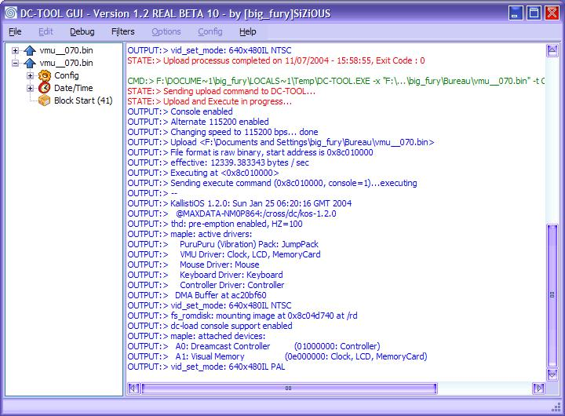
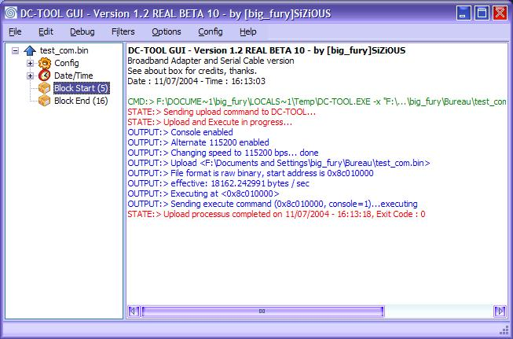
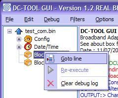
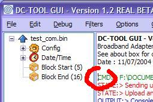
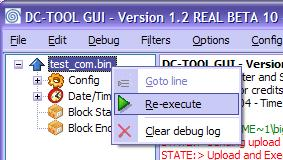

| 7. Présentation du debug log |
Ce chapitre explique comment lire le debug log.
1) Le debug log
Après avoir envoyé ou reçu un fichier, vous avez beaucoup de texte qui s'ajoute de toutes les couleurs. C'est pas pour faire joli. Vous pouvez vous en servir pour analyser le comportement du programme.
Prenons un exemple pour la démonstration. Vous avez envoyé par exemple... VMU Tool de speud. Analysons ensemble le debug log qu'il nous a sorti.
Après avoir attendu quelques minutes lors de l'envoi du programme, vous avez un écran comme celui ci :

Vous voyez plein de lignes, de toute les couleurs. Ca fait joli hein? J'ai bien choisi les couleurs ? Bon plus serieusement, on peut voir 3 type de lignes (et de couleurs) :
A quoi correspond ces couleurs ? Voici l'explication :
Bref, revenons à ce qui se passe sur l'écran : Vous voyez que votre programme est executé. Si vous changez quelque chose, que vous cliquez, vous verrez des sorties qui seront ajoutées.
2) L'arbre d'historique
Autre exemple : Vous avez executé un autre programme. Il est terminé (comme vous voyez en bas, Upload processus completed on 11/07/2004 - 16:13:18, Exit Code : 0). Bon, au passage, exit code = 0 veut dire que tout c'est bien passé.
a) Aller à la ligne
Regardez l'arbre sur la gauche. Vous voyez Block Start (5) sélectionné. Faites de même...

...puis cliquez avec le bouton droit, sélectionnez Aller à la ligne... ...

...Puis regardez ou est le curseur ! Il se trouve à la ligne 5, comme le montre l'image.

b) Ré-executer
Vous avez peut-être remarqué que il y'avais un élément re-executer désactivé. Pour l'activer, cliquez sur le noeud parent, puis sélectionnez la commande ré-executer. Cela aura pour action de re-executer la commande faite (marquée en dessous, dans Config) avec tous les paramètres utilisés à ce moment la.

Vous voyez que vous pouvez re-executer :)